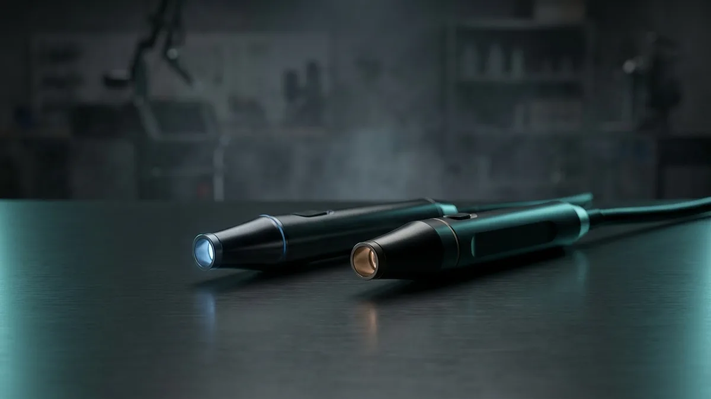
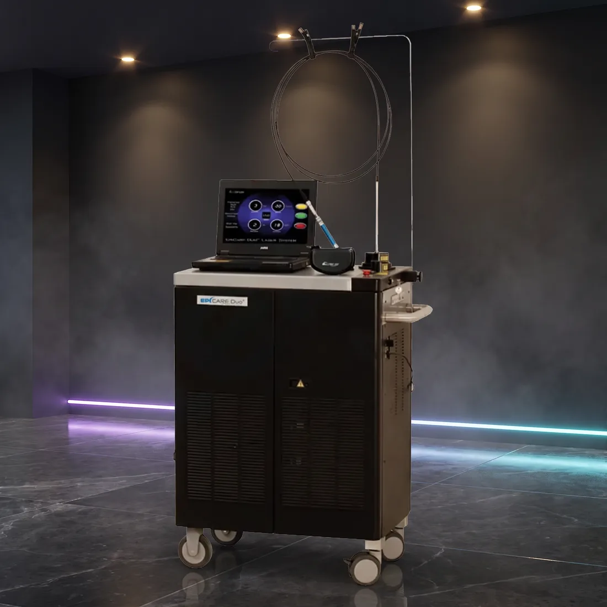
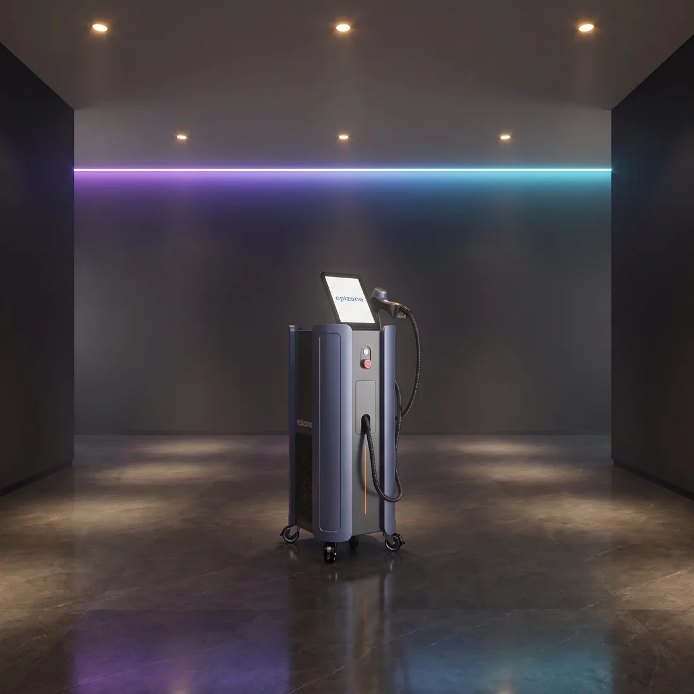

Alexandrite mi, diode mu, mix mi? Cilt tipine göre doğru seçim
Cihaz seçimi çoğu zaman marka tartışmasıyla başlar; oysa belirleyici olan çok daha temel bir parametredir: dalga boyu. 755 nm, 808 nm ve 1064 nm aynı işi farklı biçimde yapar, çünkü ışığın dokudaki davranışı dalga boyuna göre değişir. Bu yazıda üç dalga boyunun melanin soğurma davranışını, Fitzpatrick ölçeğiyle ilişkisini ve çoklu dalga boylu sistemlerin işletmeye ne kattığını teknik düzeyde ele alıyoruz.

Dalga boyu bir tercih değil, fizik parametresidir
Lazer epilasyon cihazlarında hedef kromofor melanindir. Seçici fototermoliz ilkesi, hedef yapının çevre dokuya kıyasla ışığı daha fazla soğurmasına ve açığa çıkan ısının hedefte sınırlı kalmasına dayanır. Bu denklemin üç ana değişkeni vardır: dalga boyu, atım süresi ve enerji yoğunluğu. Dalga boyu, ışığın hangi kromofor tarafından ne oranda soğurulacağını ve dokuda ne kadar derine ineceğini belirler.
Melaninin soğurma eğrisi geniş bantlıdır ve görünür bölgeden yakın kızılötesine doğru ilerledikçe düşer. Yani 755 nm'de melanin soğurması 808 nm'ye göre daha yüksek, 1064 nm'ye göre ise belirgin biçimde daha yüksektir. Aynı yönde ikinci bir etki daha vardır: dalga boyu uzadıkça dokudaki saçılma azalır ve ışık daha derine ulaşır. Kısa dalga boyu güçlü soğurma ve sınırlı derinlik, uzun dalga boyu ise görece zayıf soğurma ve daha fazla derinlik anlamına gelir.
Buradaki asıl mesele rekabettir. Kıl folikülündeki melanin hedeflenirken epidermisteki melanin de aynı ışığı soğurur. Epidermal pigment ne kadar yoğunsa, kısa dalga boylarında yüzeyde tutulan enerjinin oranı o kadar artar. Cilt tipi ile dalga boyu arasındaki ilişkiyi kuran temel fizik budur; bir marka tercihi ya da pazarlama argümanı değildir.
Fitzpatrick ölçeği: cihaz seçiminde teknik bir girdi
Fitzpatrick I–VI ölçeği, cildin ultraviyoleye verdiği yanıta ve yapısal pigment düzeyine göre yapılan bir sınıflandırmadır. Klinikte hasta değerlendirmesinin bir parçasıdır; cihaz alan bir işletme içinse farklı bir işlev taşır. Ölçek, gelen hasta profilinin hangi parametre aralığına ihtiyaç duyacağını gösterir. Yani satın alma kararının girdi verisidir.
Ölçeğin alt basamaklarında epidermal melanin görece düşüktür; kısa dalga boylarında folikül ile epidermis arasındaki soğurma kontrastı yüksektir. Üst basamaklara doğru epidermal melanin arttıkça bu kontrast azalır. Daha uzun dalga boyu, epidermal soğurmayı görece azaltır; ancak hedefteki soğurma da düştüğü için daha yüksek enerji yoğunluğu ve etkin bir soğutma katmanı gerekir. Bu nedenle koyu cilt tipleri ağırlıklı bir profilde, cihazın soğutma başlığı ve enerji rezervi dalga boyu kadar belirleyici hale gelir.
Bronzlaşmanın da geçici olarak epidermal melanini artırdığını hatırlamak gerekir. Türkiye'de yaz aylarında aynı hastanın uygun parametre penceresi kış dönemine göre değişebilir. Tek dalga boylu bir hattın yıl boyunca aynı randevu hacmini aynı esneklikle karşılaması bu nedenle zorlaşabilir.
Üç dalga boyu, üç farklı davranış
Aşağıdaki tablo, 755 nm, 808 nm ve 1064 nm'nin soğurma davranışını, hangi cilt tipi profillerinde tercih edilme eğiliminde olduklarını ve satın alma sırasında sorulması gereken teknik başlıkları özetler. Tablo genel teknik eğilimleri gösterir; uygulamadaki nihai parametre kararı uygulayıcının değerlendirmesine ve üretici kullanım kılavuzuna bağlıdır.
| Dalga boyu | Soğurma özelliği | Hangi profilde tercih edilir | Dikkat edilmesi gereken |
|---|---|---|---|
| 755 nm (Alexandrite) | Melanin soğurması yüksek, penetrasyon yüzeyel–orta | Genellikle Fitzpatrick I–III ağırlıklı hasta profili | Epidermal pigment arttıkça yüzeyde tutulan enerji artar; bronz ciltte parametre penceresi daralır, soğutma kritikleşir |
| 808 nm (Diode) | Orta düzey soğurma, dengeli penetrasyon | Fitzpatrick I–IV aralığında geniş kullanım | Yüksek frekanslı çalışmada duty cycle ve başlık ısınması; el başlığı ömrü veya atım garantisi mutlaka sorulmalı |
| 1064 nm (Nd:YAG) | Melanin soğurması düşük, penetrasyon en derin | Koyu cilt tipleri ve bronz cilt ağırlıklı profil | Hedefteki soğurma da düşük olduğu için daha yüksek akıcılık gerekir; hasta konforu ve soğutma yönetimi öne çıkar |
| Çoklu / mix (örn. 755+1064) | Tek platformda birden fazla soğurma profili | Karma hasta profili olan işletmeler | Her dalga boyunun kendi gücü, spot boyu ve soğutması ayrı ayrı incelenmeli; 'mix' etiketi tek başına yeterli bilgi değildir |
| Geniş bant ışık (BBL/IPL) | Filtrelenmiş geniş spektrum, tek dalga boylu değil | Filtre seçimine göre değişir; cilt tonu uygulamalarında da kullanılır | Spektrum genişliği nedeniyle parametre ve filtre bakım yönetimi ayrı bir disiplindir |
Türkiye'de hasta profili çeşitliliği ve mix sistemlerin işletmeye kattığı esneklik
Türkiye'de tek bir tipik hasta profili yoktur. Aynı ilçedeki bir merkezde Fitzpatrick II ile V arasında geniş bir dağılım görülebilir; buna mevsimsel bronzlaşma, iç göç ve bazı şehirlerde sağlık turizmi hareketliliği eklenir. Kıl rengi ve kalınlığındaki çeşitlilik de aynı yönde çalışır.
İşletme açısından sonucu şudur: tek dalga boylu bir hat, gelen profilin bir bölümünü rahat karşılarken diğer bölümünde parametre penceresi daralır. Bu, pratikte randevunun ertelenmesi ya da başka bir merkeze yönlendirilmesi demektir. Çoklu dalga boylu bir platform ise bu kararı cihaz değiştirmeden, aynı seans içinde parametre seviyesinde vermeye imkân tanır.
Operasyonel tarafta çoklu sistem tek gövde, tek kurulum alanı, tek bakım sözleşmesi ve tek eğitim seti anlamına gelir. Buna karşılık operatör eğitimi daha kritiktir: yanlış dalga boyu seçimi, tek dalga boylu bir cihazda hiç var olmayan bir hata sınıfıdır. Yazılı protokol kartları ve kullanıcı yetki seviyeleri bu noktada işleyişte fark yaratır.
Estezone portföyünde bu üç yaklaşımın karşılığı vardır: tek dalga boylu 755 nm sistemler (Arion Alexandrite Lazer, Light Age Epicare LPX), 755+1064 nm çift dalga boylu yapı (Light Age Epicare DUO) ve diode/mix mimarisi (Epizone Mix Diode Lazer). Hangisinin uygun olduğu cihazın kendisinden çok, işletmenin hasta dağılımından çıkar.
Satın alma öncesi teknik kontrol listesi
Dalga boyu kararı verildikten sonra bile iki cihaz aynı olmaz. Aşağıdaki başlıklar, teklif karşılaştırırken aynı sorunun her tedarikçiye sorulmasını sağlar. Bu listeyi doldurulmuş hâlde masaya koymak, karşılaştırmayı marka tartışmasından teknik zemine taşır.
- Hasta profili dağılımı: son 12 ayın kayıtlarından cilt tipi dağılımını çıkarın; karar bu tablodan başlamalı.
- Dalga boyu başına güç ve spot boyu: çoklu sistemlerde her dalga boyunun ayrı teknik sayfası istenmeli.
- Atım süresi aralığı: cihazın sunduğu milisaniye penceresi, farklı cilt tipi ve kıl yapılarında parametre esnekliğini belirler.
- Tekrarlama frekansı (Hz) ve duty cycle: seans süresini ve yoğun günlerde oluşan bekleme ihtiyacını doğrudan etkiler.
- Soğutma yöntemi: temaslı safir, hava veya kriyojen; ayrıca harici soğutma üniteleri (EpiCool, Zimmer Cryo 6) ek bir konfor katmanı sağlar.
- Sarf ve bakım kalemleri: filtre, kriyojen, el başlığı ömrü veya atım garantisi — toplam sahip olma maliyetinin gerçek kalemleri buradadır.
- Servis erişimi: yedek parça tedarik süresi, arıza hâlinde müdahale biçimi ve garanti kapsamının yazılı hâli.
- Eğitim ve devir: kurulum sonrası operatör eğitimi, yazılı protokol dokümanı ve yeni personel geldiğinde tekrar eğitim koşulları.
- Altyapı: elektrik hattı kapasitesi, oda havalandırması, uyarı levhası ve dalga boyuna uygun koruyucu gözlük (Lazer Koruyucu Gözlük) — gözlüğün koruma değeri cihazın dalga boyunu kapsamalıdır.
- Belgeler: cihazın üretici ve uygunluk belgeleri ile kayıt yükümlülüklerinin, işletme ruhsatınızın kapsamıyla uyumlu olması.
- Demo koşulu: mümkünse cihazı kendi hasta profilinizden örneklerle, kendi elektrik ve oda koşullarınızda gözlemleyin.
Özetle
"Alexandrite mi, diode mu, mix mi?" sorusunun tek bir teknik cevabı yoktur; çünkü soru eksiktir. Doğru soru şudur: benim hasta profilim hangi dalga boyu penceresini gerektiriyor ve bu pencereyi tek platformda mı yoksa ayrı cihazlarla mı karşılamak istiyorum? Melanin soğurma fiziği bu kararın çerçevesini çizer, cilt tipi dağılımınız ise içini doldurur. Önce kendi kayıtlarınızdan dağılımı çıkarın, sonra dalga boyu başına güç, spot, soğutma, sarf ve servis başlıklarını aynı formatta karşılaştırın. Konfigürasyon ve maliyet kalemleri cihazın donanımına göre değiştiği için bu kalemler teklif aşamasında netleşir; teknik karşılaştırma tablonuzu önceden hazırlamak o görüşmeyi çok daha verimli hâle getirir.
Sık sorulanlar
Koyu cilt tiplerinde 755 nm hiç kullanılamaz mı?
Mix bir cihaz, tek dalga boylu cihazın yerini tutar mı?
Alexandrite ile diode arasındaki fark yalnızca dalga boyu mu?
Bu cihazlar arasındaki fiyat farkı nedir?
İlgili platformlar
Yazıda anlatılan teknik kalemleri gerçek cihazlar üzerinde görün.

Arion Alexandrite Lazer
755 nm AlexandriteTek platformda epilasyon, vasküler ve pigmente lezyon tedavisi; opsiyonel başlıklarla tedavi menüsünü genişletir.

Light Age Epicare DUO
755 + 1064 nmAlexandrite ve Nd:YAG tek gövdede; açık ciltten koyu cilde kadar tüm Fitzpatrick aralığını tek yatırımla karşılar.

Epizone Mix Diode Lazer
3300 W GüçEn çok kullanılan üç dalga boyu tek başlıkta; 12 inç dokunmatik arayüzle operatör eğitimi kısalır.
Bu yazıdaki hesabı kendi işletmeniz için yapalım
Cihaz seçimi, servis kapsamı ve yatırım geri dönüşü — kendi rakamlarınızla oturup konuşalım.
Ankara ve İstanbul ofislerimizden aynı gün dönüş yapılır.